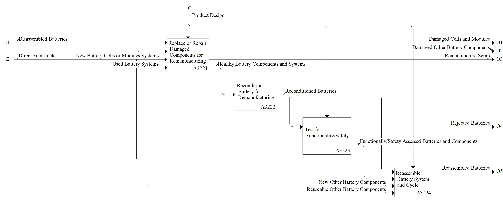

Model: Remanufacture Battery

Description
Notes:Definition:
See A32
Standards:
See A32
References:
Graner M, Heieck F, Fill A, Birke P, Hammami W, Litty K (2022, November) Requirements for a process to remanufacture EV battery packs down to cell level and necessary design modifications. In Stuttgart Conference on Automotive Production (pp. 376-386). Cham: Springer International Publishing. https://doi.org/10.1007/978-3-031-27933-1_35
Parent Activity: Remanufacture Battery
Disclaimer: Certain commercial equipment, instruments, or materials are identified in this documentation to foster understanding. Such identification does not imply recommendation or endorsement by the National Institute of Standards and Technology, nor does it imply that the materials or equipment identified are necessarily the best available for the purpose.